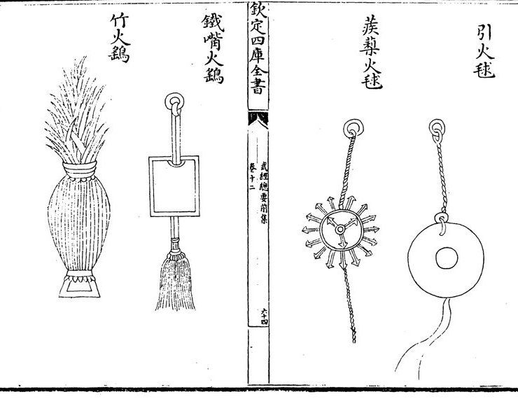

Traduction de texte ancien comprenant une formule de fabrication de poudre à canon ?!
On avait recommandé aux alchimistes taoïstes de ne pas mélanger ces ingrédients…
Dans le cadre de mes cours de recherche universitaire, je suis tombée, à ma grande surprise, sur un texte qui donne une ancienne formule pour faire de la poudre à canon. Voici mon travail de traduction.

Page illustrée du Wujing Zongyao (édition Siku quanshu) ; à droite, la boule à chausse-trapes 蒺藜火毬.
Le texte étudié
Le Wujing Zongyao 武經總要 est un traité militaire de la dynastie Song du Nord, compilé en 1044 par Zeng Gongliang 曾公亮, Ding Du 丁度 et leurs collaborateurs. L’extrait se trouve dans la première partie, chapitre 11, paragraphe 92 (numérotation du site ctext.org). Les Song (960–1279) sont une période particulièrement riche en innovations ; les Song du Nord couvrent les années 960–1127.
Texte intégral et traduction : 蒺藜火球 (Jílí huǒqiú)
蒺藜火球，以三枝六首鐵刃，以火藥團之，中貫麻繩，長一丈二尺。外以紙並雜藥傅之，又施鐵蒺藜八枚，各有逆鬚。放時，燒鐵錐烙透，令焰出火藥法：用硫黃一斤四兩，焰硝二斤半，粗炭末五兩，瀝青二兩半，乾漆二兩半，搗為末；竹茹一兩一分，麻茹一兩一分，剪碎，用桐油、小油各二兩半，蠟二兩半，熔汁和之。外傅用紙十二兩半，麻一十兩，黃丹一兩一分，炭末半斤，以瀝青二兩半，黃蠟二兩半，熔汁和合，周塗之。
蒺藜火球，以三枝六首铁刃，以火药团之，中贯麻绳，长一丈二尺。外以纸并杂药傅之，又施铁蒺藜八枚，各有逆须。放时，烧铁锥烙透，令焰出火药法：用硫黄一斤四两，焰硝二斤半，粗炭末五两，沥青二两半，乾漆二两半，捣为末；竹茹一两一分，麻茹一两一分，剪碎，用桐油、小油各二两半，蜡二两半，熔汁和之。外傅用纸十二两半，麻一十两，黄丹一两一分，炭末半斤，以沥青二两半，黄蜡二两半，熔汁和合，周涂之。
Boule incendiaire à chausse-trapes — 蒺藜火球 (Jílí huǒqiú)
La boule incendiaire à chausse-trapes est constituée de trois branches munies de six lames de fer, autour desquelles est assemblée de la poudre explosive. Une corde de chanvre longue d’un zhang et deux chi (environ 3,70 m) traverse le centre de l’engin. L’extérieur est recouvert de papier et d’un mélange de diverses substances. Huit chausse-trapes en fer, chacune munie de pointes recourbées, sont également fixées à l’extérieur. Au moment de l’emploi, une pointe de fer chauffée est appliquée de façon à percer l’enveloppe jusqu’à la traverser, afin que la flamme atteigne la poudre.
Composition de la poudre à canon :
Soufre : un jin et quatre liang, soit environ 791 g.
Salpêtre : deux jin et demi, soit environ 1 583 g.
Charbon grossièrement broyé : cinq liang, soit environ 198 g.
Bitume : deux liang et demi, soit environ 99 g.
Laque sèche : deux liang et demi, soit environ 99 g.
Ces matières sont réduites en poudre.
Composition de la couche intermédiaire :
Fibre de bambou : un liang et un fen.
Fibre de chanvre : un liang et un fen.
Huile de tung : deux liang et demi.
Autre huile végétale : deux liang et demi.
Cire : deux liang et demi.
Les fibres de bambou et de chanvre sont coupées en petits morceaux. Les huiles et la cire sont fondues, puis mélangées aux fibres.
Les quantités exprimées en liang et fen sont conservées comme unités historiques, car leur conversion exacte dépend des conventions retenues.
Composition du revêtement extérieur :
Papier : douze liang et demi.
Chanvre : dix liang.
Oxyde de plomb : un liang et un fen.
Poudre de charbon : un demi-jin.
Bitume : deux liang et demi.
Cire jaune : deux liang et demi.
Le bitume et la cire sont fondus, puis mélangés aux autres matières. Le mélange est appliqué tout autour de l’objet afin de former son revêtement.
Particularité pour réaliser cette traduction
- Deux écritures. L’original est en caractères traditionnels (鐵, 藥, 繩, 鬚) ; la version simplifiée (铁, 药, 绳, 须) permet de comparer les deux systèmes d’écriture.
- Vocabulaire technique. 蒺藜 (jílí) désigne une plante épineuse dont le nom est associé aux « chausse-trapes » ; 逆鬚 désigne des pointes recourbées ; 焰硝 le salpêtre ; 瀝青 le bitume ; 乾漆 la laque sèche ; 黃丹 l’oxyde de plomb.
- Unités anciennes. Les mesures sont converties à titre indicatif pour la période des Song du Nord (Wilkinson, 2000) : 1 丈 zhang ≈ 3,08 m ; 1 尺 chi ≈ 30,8 cm ; 1 斤 jin ≈ 633 g ; 1 兩 liang ≈ 39,56 g. Ainsi, 一丈二尺 correspond à environ 3,70 m.
- Particularités de la langue ancienne. Dans le chinois ancien, le sujet peut être omis lorsqu’il est implicite dans le contexte. Les indications grammaticales sont également parfois absentes ou moins explicites qu’en français : les relations entre les éléments de la phrase, les actions et leurs agents doivent alors être déduites du contexte et de la syntaxe. La traduction française nécessite donc parfois de rétablir un sujet ou de préciser les liens logiques pour produire un texte compréhensible, sans ajouter d’information qui ne soit pas soutenue par l’original.
Sources
- ZENG Gongliang 曾公亮, DING Du 丁度 et al., Wujing Zongyao 武經總要, 1044 — texte : ctext.org.
- WILKINSON, Endymion Porter, Chinese History: A Manual, Cambridge (MA), Harvard University Asia Center, 2000, p. 234–246, « Weights and Measures ». ISBN 978-0-674-00249-4.
- Illustration : Wikimedia Commons.